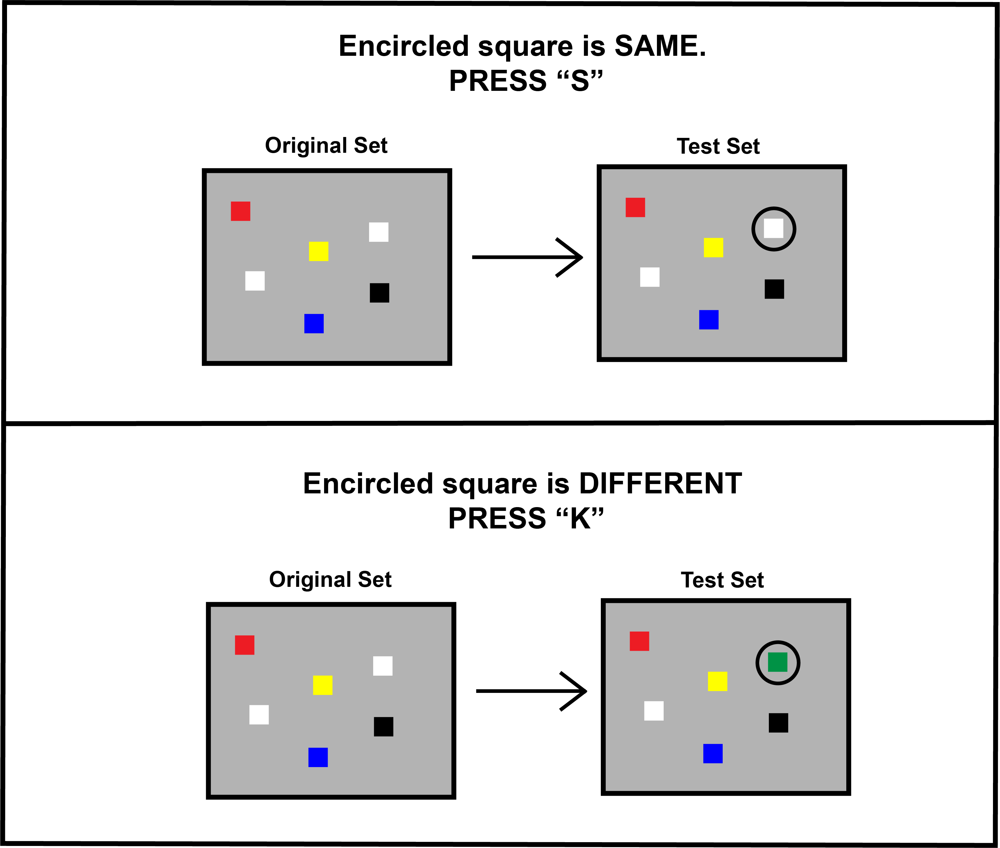

<html>
  <head>
    <title>WM visual array task</title>
    <script src="jspsych-6.0.4/jspsych.js"></script>
    <script src="jspsych-6.0.4/plugins/jspsych-html-keyboard-response.js"></script>
    <script src="jspsych-6.0.4/plugins/jspsych-visual-array-stimuli.js"></script>
    <script src="jspsych-6.0.4/plugins/jspsych-visual-array-response.js"></script>
    <script src="jspsych-6.0.4/plugins/jspsych-survey-text.js"></script>
    <script src="jspsych-6.0.4/plugins/jspsych-instructions.js"></script>
    <script src="jspsych-6.0.4/plugins/jspsych-fullscreen.js"></script>
    <script src="https://cdn.jsdelivr.net/npm/jstat@latest/dist/jstat.min.js"></script>
    <script src="https://ajax.googleapis.com/ajax/libs/jquery/1.11.1/jquery.min.js"></script>
    <link href="jspsych-6.0.4/css/jspsych_visualarray.css" rel="stylesheet" type="text/css"></link>
  </head>
  <body>
</body>
  <script>

  /*
      This is a web-based visual array test.
      It is modelled after the visual array task described in Cowan et al (2006) [https://www.ncbi.nlm.nih.gov/pubmed/17489300].
      However, users can easily customize this test for their own purposes.
      Easily customizable variables have been listed below. For further changes to the test, knowledge of JavaScipt may be required.

      For smooth functioning of the test, make sure all the associated github files within the repository have been downloaded (especially the folder named 'jspsych-6.0.4').
      Results from this test will be automatically downloaded into the downloads folder of your desktop.

      For further details, please refer to the README.
  */

  //----- CUSTOMIZABLE VARIABLES -----------------------------------------

    setSizes = [4, 6, 8, 10] // set sizes (number of squares displayed in different visual array trials)
    repSet = 15 // number of times each set size should be repeated
    randomize = true // present different set sizes in random order. if false, set sizes will be presented in ascending order
    stimuli_duration = 300 // number of miliseconds to display each stimuli
    recall_duration = null // number of miliseconds to allow recall. If null, there is no time limit.
    file_name = null // file name for data file. if null, a default name consisting of the participant ID and a unique number is chosen.
    local = true // save the data file locally.
                // If this test is being run online (e.g., on MTurk), true will cause the file to be downloaded to the participant's computer.
                // If this test is on a server, and you wish to save the data file to that server, change this to false.
                // If changed to false, ensure that the php file (its in the directory!) and the empty "data" folder has also been appropriately uploaded to the server.
                // Incase of problems, feel free to contact me :)

  //----------------------------------------------------------------------

  var stimuliArr = []
    for (var i=0; i<setSizes.length; i++){
      for (var h=1; h<=repSet; h++){
        stimuliArr.push([setSizes[i],true])
      }
      for (var h=1; h<=repSet; h++){
        stimuliArr.push([setSizes[i],false])
      }
    }

  var stimuliDemoArray = [[4,true], [4,false], [6,false], [8,true]]

  if (randomize){
    var stimuliArray= stimuliDemoArray.concat(jsPsych.randomization.sampleWithoutReplacement(stimuliArr, stimuliArr.length))}
  var n = -1

  var p_details = {
    type:"survey-text",
    questions: [{prompt: "Enter subject number"}],
    on_finish:function(){
      partN = jsPsych.data.get().last(1).values()[0].partNum
      partN = partN.replace(/['"]+/g,'')
//      console.log(partN[0])
    }
  }

  var instructions = {
    type: 'instructions',
    pages: function(){
      pageOne = '<div style="font-size:20px;"><b>INSTRUCTIONS</b><br><br>This is a visual array task. On each trial, you will be shown a set of four, six, or eight squares. You will then be shown a test set, which has one square encircled. You have to indicate whether the encircled square is of the same color as that of the original set.<br><br>Press "S" if color is same and "K" if color is different. <br><br></img><br><br>Press "K" for next page.</div>'
      pageTwo = '<div style="font-size:20px;">We will now start with demo trials to ensure you have understood the task. <br><br>Remember: <br>Press <b>"S"</b> if color is <b>SAME</b>. <br>Press <b>"K"</b> is color is <b>DIFFERENT</b>.<br>For quick performance, keep your left hand finger on "S" and right hand finger on "K".<br>Pay attention as the original set will be displayed only for half a second.<br><br>Press "K" to continue.</div>'
      return [pageOne, pageTwo]
    },
    allow_backward: false,
    key_forward: "k"
  }


  var exp_instructions = {
    type: 'instructions',
    pages: function(){
      pageOne = '<div style="font-size:20px;">We will now start with the main trials. </b><br><br>Remember: <br>Press <b>"S"</b> if color is <b>SAME</b>. <br>Press <b>"K"</b> is color is <b>DIFFERENT</b>.<br><br>If you have not understood the task, please call the Research Assistant for help.<br><br>If you have understod the task, press "K" to start the main trials.</div>'
      return [pageOne]
    },
    allow_backward: false,
    key_forward: "k"
  }

  var conclusion = {
    type: 'html-keyboard-response',
    stimulus: '<div style="font-size:20px;">This task is over. Thank you for your participation in this task. <br><br>Please call the Research Assistant.</div>',
    choices: jsPsych.NO_KEYS
  }

var fixation = {
  type: 'html-keyboard-response',
  stimulus: '<div style="font-size:40px;">+</div>',
  choices: jsPsych.NO_KEYS,
  trial_duration: 900
}

var reward={
  type: "visual-array-stimuli",
  set_size: function(){
  //  console.log(stimuliArray[n][0])
    n+=1
    return stimuliArray[n][0]
  },
  target_size: [16, 16],
  trial_duration: stimuli_duration
  }


var recall={
  type: "visual-array-response",
  target_size: [16, 16],
  locs: function(){
    var h = jsPsych.data.get().last(2).values()[0].locations
    return h
  },
  cols: function(){
    var h = jsPsych.data.get().last(2).values()[0].colours
    return h
  },
  target_different: function(){
    return stimuliArray[n][1]
  },
  trial_duration: recall_duration
}

var feedback = {
  type: 'html-keyboard-response',
  stimulus: function(){
    var text = ""
    var accuracy = jsPsych.data.get().last(1).values()[0].correct
    if (accuracy){
      text += '<div style="font-size:35px; color:rgb(0 130 0)"><b>Correct</div>'
    } else{
      text += '<div style="font-size:35px; color:rgb(180 0 0)"><b>Incorrect</div>'
    }
    //text += '<div style="font-size:30px; color:rgb(0 0 0)"><br><br>New trial starting now.</div>'
    return text
  },
  choices: jsPsych.NO_KEYS,
  trial_duration: 1000
}

function saveData(filename, filedata){
      $.ajax({
            type:'post',
            cache: false,
            url: 'save_data.php', // this is the path to the above PHP script
            data: {filename: filename, filedata: filedata}
      });
};

var IDsub = Date.now()
var dataLog = {
 type: 'html-keyboard-response',
 stimulus: " ",
 trial_duration: 100,
 on_finish: function(data) {
      var data = jsPsych.data.get()
      if (file_name == null){
        file_name = "WM_visual_array_"+partN+"_"+IDsub.toString()+".csv"}
      else{
        file_name += ".csv"
      }
      if (local){
        data.localSave('csv', file_name )
      } else {
        saveData(file_name, data.csv());
      }
   }
}

var demo_procedure = {
  timeline: [fixation, reward, fixation, recall, feedback],
  repetitions: 4
}

  var test_procedure = {
    timeline: [fixation, reward, fixation, recall, feedback],
    repetitions: 120
  }

  var full_procedure = {
    timeline: [instructions, demo_procedure, exp_instructions, test_procedure]
  }

  var images = ['img/blue.png', 'img/white.png', 'img/black.png', 'img/yellow.png', 'img/green.png', 'img/red.png', 'img/purple.png', 'img/instructions.png']

  timeline = [p_details]

  timeline.push({
    type: 'fullscreen',
    fullscreen_mode: true
  });

timeline.push(full_procedure)

timeline.push({
  type: 'fullscreen',
  fullscreen_mode: false
});
timeline.push(dataLog)
timeline.push(conclusion)


jsPsych.init({
  timeline: timeline,
  preload_images: images,
  on_finish: function() {
    jsPsych.data.displayData(); // comment out if you do not want to display results at the end of task
  }
});
</script>
</html>
